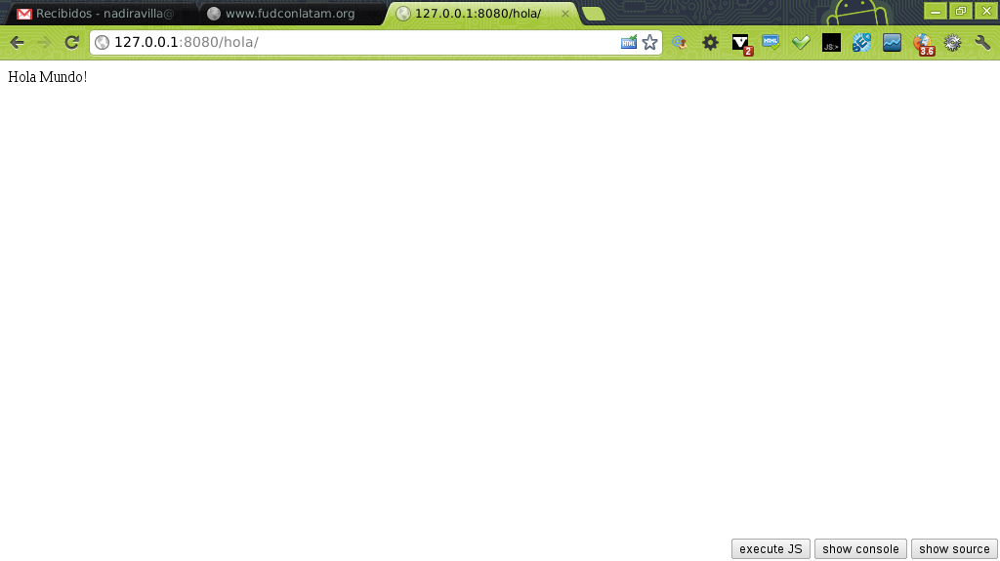

Hola Mundo con Django. Parte 2.
Posted on sáb 07 julio 2012 in Tutorial Python • 2 min read
En el artículo de Framework de desarrollo web con Django parte 1 se explica como instalar Django
e iniciar el servidor web que viene incorporado para realizar pruebas del desarrollo.
Ahora se explicará como mostrar una página web con un mensaje "Hola Mundo".
Dentro del directorio pruebas del proyecto pruebas creado en el artículo anterior se crea una aplicación, La aplicación se llamará todo:
python
python manage.py startapp todo
Este comando crea el directorio todo. Dentro de ese directorio encontrarán los siguientes archivos:
__init__.py: Específica a python que el contenido del directorio es un paquete.models.py: Modelo de datos para la base de datos usando un ORM.tests.py: Define las pruebas unitarias.views.py: Se crean las vistas de la aplicación por medio de funciones.
En el archivo views.py se crea una función donde devuelve un string como respuesta para la página web:
```python
Se importa HttpResponse, la cual será usado para devolver una respuesta http.
from django.http import HttpResponse
Se crea la función HolaMundo, se le pasa como argumento request.
def HolaMundo(request):
Se devuelve una respuesta http pasando el string que se quiere que
aparezca en la página web.
return HttpResponse("Hola Mundo!")
``` Ahora que se creo la función en el archivo de vistas, se hace necesario definir el URL donde se podrá ver la página de la vista.
Para visualizar la pagina se crea una línea en el archivo urls.py del proyecto donde se define la expresión regular del url que se desea mostrar la página, luego se coloca la ruta de la función del archivo views.py donde se devuelve el string que se va a mostrar en la página.
El archivo urls.py contiene lo siguiente:
```python
Se importa patterns y url.
from django.conf.urls import patterns, url
Se importa la vista de la aplicación todo.
import todo.views
Se define la tupla de patterns donde se lista los urls a desplegar.
Se busca que el url tenga el patrón /hola, y se ejecuta HolaMundo del archivo views.py.
urlpatterns = patterns('',
url(r'^hola/',todo.views.HolaMundo),
) ```
Se ejecuta el servidor de django:
python
python manage.py runserver 8080
La figura muestra el resultado de abrir el url http://127.0.0.1:8080/hola/

¡Haz tu donativo! Si te gustó el artículo puedes realizar un donativo con Bitcoin (BTC) usando la billetera digital de tu preferencia a la siguiente dirección: 17MtNybhdkA9GV3UNS6BTwPcuhjXoPrSzV
O Escaneando el código QR desde la billetera: